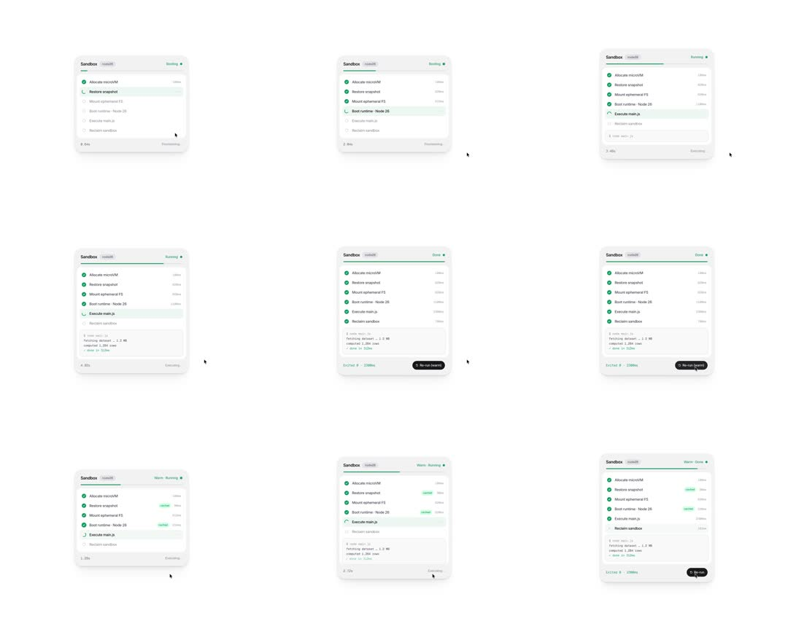

Sandbox boot checklist card: steps (Allocate microVM, Restore snapshot, Mount ephemeral FS, Boot runtime, Execute main.js, Reclaim sandbox) check off sequentially with per-step ms timings, top progress bar, streaming log lines, Booting->Running->Done status flip and a Re-run button; second pass runs 'Warm' with cached steps marked.

Build a sandbox boot-sequence card. Header: 'Sandbox' + id chip + status pill (Booting amber / Running blue / Done green) with a 3px progress bar under the header (scaleX 0->1 across the run). Checklist rows: circle indicator, step label, right-aligned ms time. Row states: pending (hollow grey circle, 60% text), active (mint row highlight, spinner arc in circle, text full), done (green filled circle, white check pops scale 0.5->1 spring, ms fades in), cached (done + small 'cached' chip). Script a step table with durations (120, 430, 350, 1100, 1300, 150ms). Log panel below streams mono-font lines every ~300ms while Execute runs. Footer: left shows elapsed timer, right 'Provisioning...' -> 'Executing...' -> 'Exited 0 - 2200ms' + black 'Re-run (warm)' button. On re-run, header shows 'Warm', steps marked cached complete at ~10% of original durations, total ~1500ms. Loop between cold and warm runs.